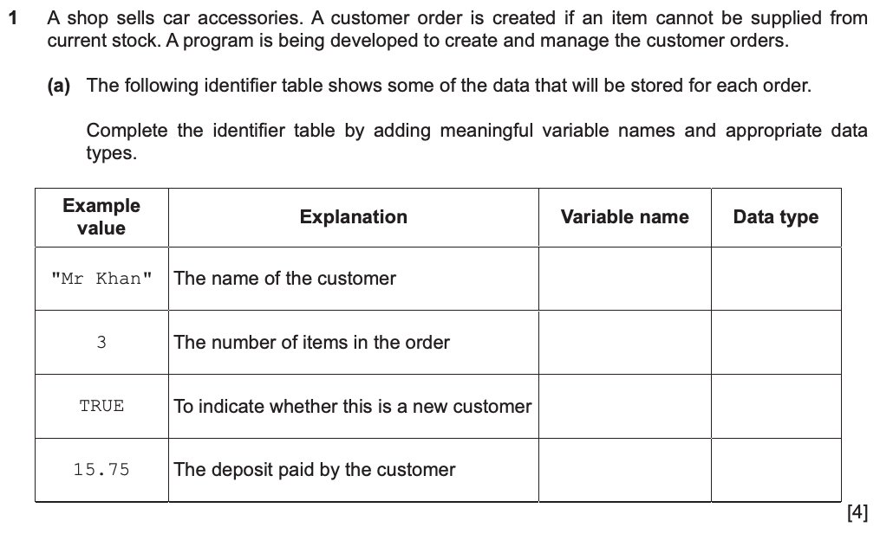
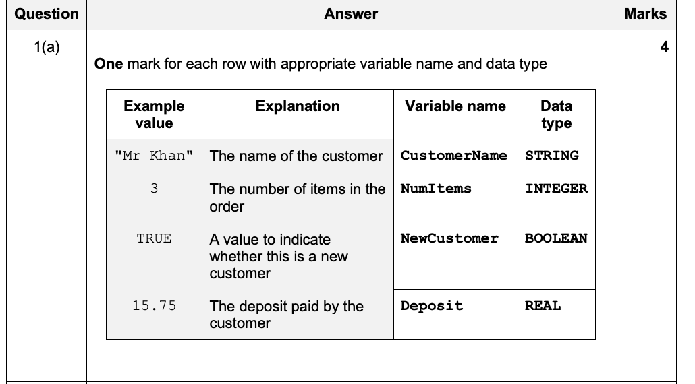

Design a ticket system · Concept 03
Give changing values meaningful names
Observe
Labels and their current contents
- BuyerName: Mina
- Quantity: 2
- Student: TRUE
- TicketPrice: 25.00 throughout this version
Look, then discuss
When one buyer replaces another, which parts of the ticket calculation change?
The desk records Mina, 2 tickets and student status TRUE. The next buyer is Arun, with 3 tickets and student status FALSE. Point to the labels that stay useful and the values that change.
Recall
A name is not its current value
Think of a labelled space that holds one current value. Reading the label tells us which data item we mean; reading its contents gives the value now. We assume inputs have the stated types. Checking wrongly typed input is outside these examples.
Explain
Explanation · 1 / 4
Follow a value changing under one name
Quantity holds 2 for Mina and later holds 3 for Arun. It is a variable because its stored value can change during execution. Using the meaningful name Quantity lets the same instructions work for both buyers.
Explanation · 2 / 4
Distinguish text, numbers and truth values
BuyerName is text, so use STRING. Quantity is a whole number, so use INTEGER. A paid amount can contain a fractional part, so use REAL. Student records TRUE or FALSE, so use BOOLEAN; it does not store the word “student”.
Explanation · 3 / 4
Separate a constant from a variable
TicketPrice is fixed at 25.00 for this version of the program. A named constant states the value once and prevents reassignment during the run. A programmer can change that definition for a later version with a new price.
Explanation · 4 / 4
Write an identifier table that explains the job
An identifier names a data item. Record its name, type and purpose, not just an example value. A declaration gives a variable a type; it does not by itself read a buyer’s name or initialise a count.
| Identifier | Type | Purpose |
|---|---|---|
| BuyerName | STRING | Name shown on the receipt |
| Quantity | INTEGER | Number of tickets requested |
| Student | BOOLEAN | Whether the buyer receives the student discount |
| Paid | REAL | Amount tendered by the buyer |
Work together
Describe the data before writing the calculation
A buyer called Lee requests four tickets and tenders 100.00. No discount is used in this small example.
Work together · 1 / 3
Choose meaningful identifiers
Use BuyerName, Quantity and Paid. Names such as X and Y would make a reader work out which value represents money and which represents tickets.
Work together · 2 / 3
Give types and current values separately
BuyerName has type STRING and current value "Lee"; Quantity has type INTEGER and value 4; Paid has type REAL and value 100.00. A type describes permitted values, not this one value alone.
Work together · 3 / 3
Add the result that will be calculated
Total has type REAL and purpose “amount due for this order”. It does not yet have a calculated value merely because it appears in the table. The algorithm must assign that result.
The identifier table connects each data name to a suitable type and a clear purpose.
Check
Try it yourself · Teacher-written
A table says Quantity has type 3 and purpose INTEGER. Correct it, then explain whether DECLARE Quantity : INTEGER gives Quantity the value zero.
Check your reasoning
The type is INTEGER; the purpose is the number of tickets requested. The value 3 is an example input. The declaration states a type and does not initialise the variable to zero.
Past paper
Attempt the past-paper questions · 4 marks
1 original question · 1 selected part · 4 marks
Suggested independent working time: 4–8 minutes (teacher estimate).
Answer the original questions first. Open guidance, a teacher solution or the official mark scheme when needed. Only the named parts are assigned; extracts also retain their required shared context.
Original question · Cambridge 9618/22
1. Complete an identifier table
Cambridge 9618/22 · October/November 2023 · 1(a) · 4 marks
Selected parts: 1(a) [4].

Hint — reading the question
Every row needs both a meaningful variable name and a type that preserves the example value.
Reasoning and model answer — teacher-written
| Meaning | Variable name | Data type |
|---|---|---|
| Customer name | CustomerName | STRING |
| Number of items | NumItems | INTEGER |
| New customer indicator | NewCustomer | BOOLEAN |
| Deposit paid | Deposit | REAL |
Official mark scheme

Why this earns marks — teacher explanation
Each complete row earns one mark, four overall. The teacher names are examples; other meaningful names with the correct types are valid.
Common mistakes — teacher analysis
CHAR holds one character, not the whole customer name. INTEGER cannot retain the fractional part of the deposit.
Cambridge past-paper access page ↗ · Source references and page numbers are shown with each extract. © Cambridge University Press & Assessment / UCLES.
Connect
Keep this idea
Use meaningful identifier names and document each identifier’s data type and purpose.
Next, make values move through input, assignment and output in a defined order.
Continue: Trace input, assignment and output →Learning goals
- Show understanding that an algorithm is a solution to a problem expressed as a sequence of defined steps
- Use suitable identifier names for the representation of data used by a problem and represent these using an identifier table